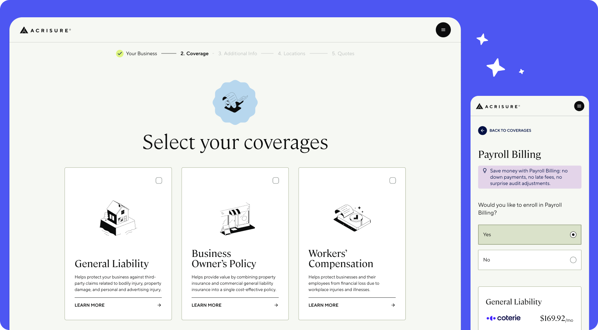
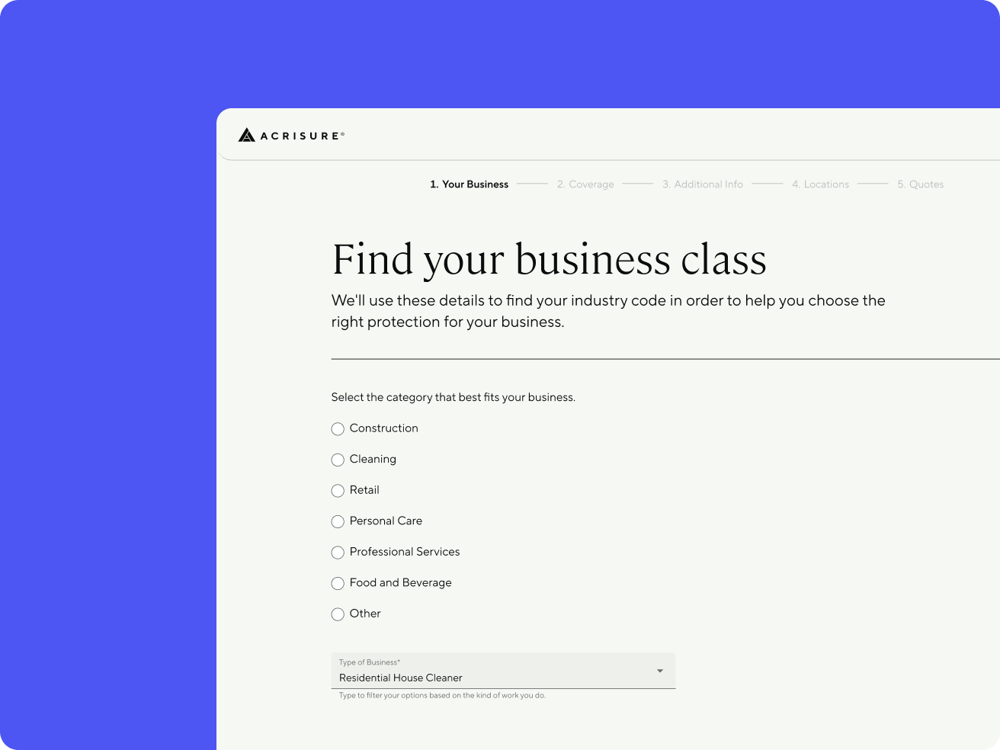
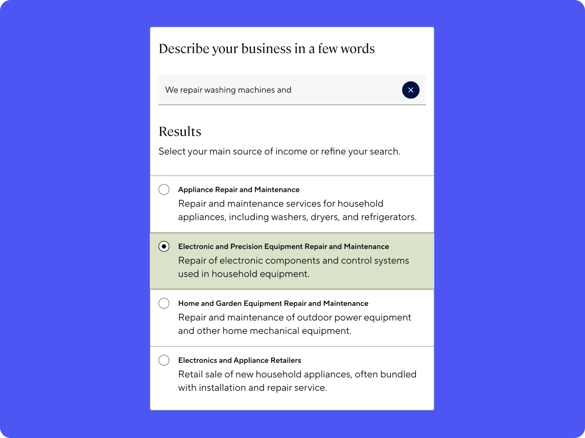
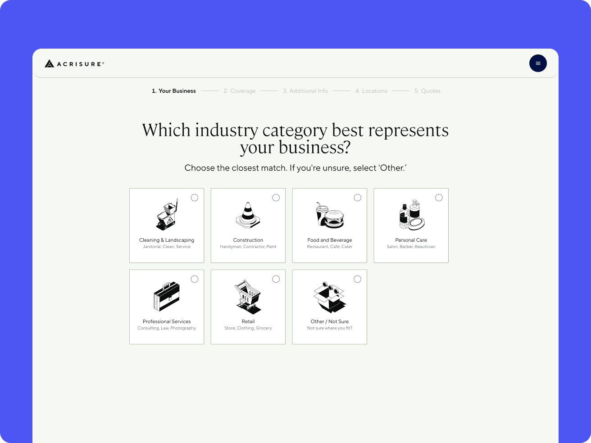
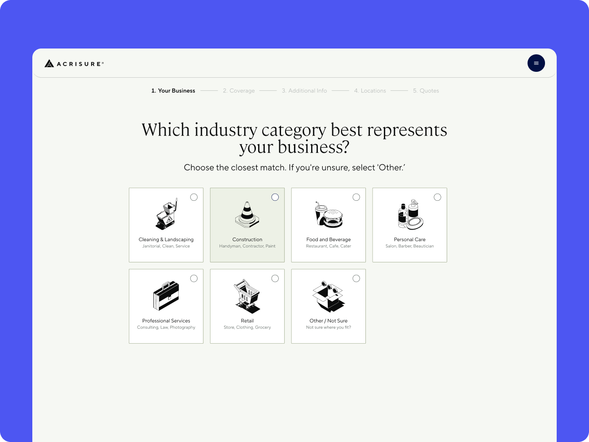
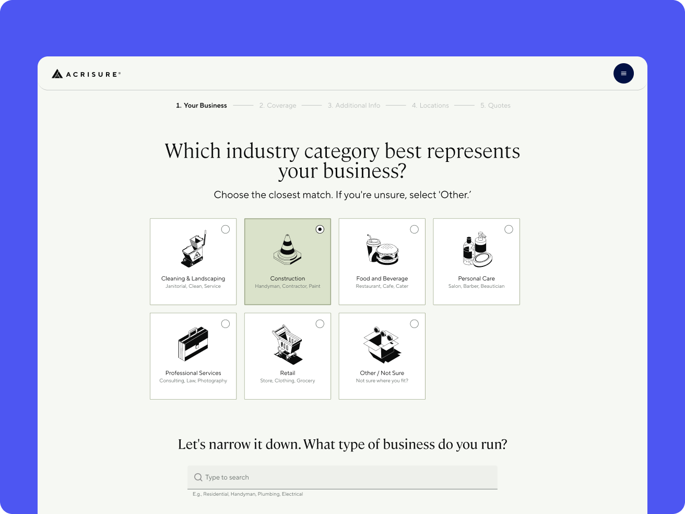
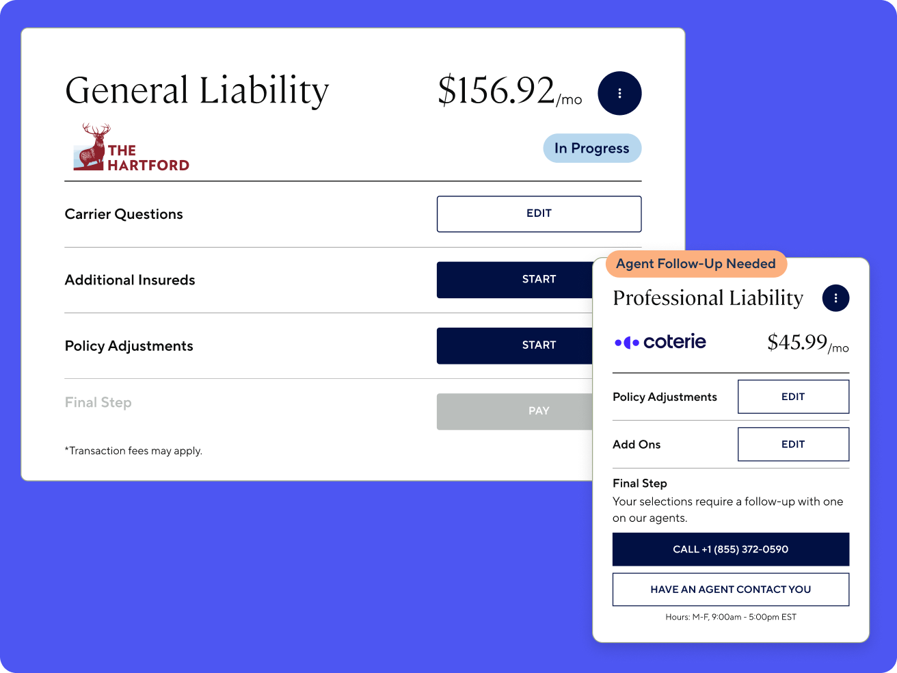

Rebuilding a Multi-Carrier Insurance Platform
Redesigning small business insurance quoting across dozens of carrier rulesets.

The Situation
The platform lets small businesses quote and bind insurance across six product lines: General Liability, Business Owner's Policy, Workers' Comp, Professional Liability, Cyber, and Commercial Property. It has to support fully digital, hybrid, and agent-assisted journeys at once.
The experience I inherited was functional but fragile. It had been built to prove a fully digital model worked, then patched after an acquisition to meet new carrier and brand requirements. It couldn't reliably support the mix of journeys the business actually needed. The goal was to redesign it to work across dozens of carrier rulesets, without pushing that complexity onto the customer.
This is one of the best user experiences we have seen in the customer-facing realm.
The Hartford, Carrier PartnerThe Constraint
Small commercial insurance quoting has a specific kind of complexity that better UI alone doesn't solve.
Every product line depends on classifying a customer's industry correctly to determine eligibility and price. There are thousands of possible industry codes, and the naming is inconsistent enough to get strange (cleaning services alone split across half a dozen adjacent categories). Some single-carrier competitors can offer a clean, curated list because they underwrite their own policies end to end. The platform works across many carriers at once, so that shortcut wasn't available. Consolidating the raw data into something friendlier would have taken engineering investment that was never prioritized.
I had to make an inherently messy system feel navigable through UI alone.
What I Did
- Rebuilt the flow as a system, not screens. Mapped question requirements across product lines, carriers, and payment models to see which complexity was unavoidable and which could be abstracted or sequenced differently.
- Abstracted carrier variation at the system level. Carrier requirements varied significantly. Exposing that variation directly to users created confusion, so divergence got handled behind the scenes instead of in the UI.
- Supported both digital completion and agent handoff. Rather than one "happy path," the flow let customers complete digitally where possible while preserving context if they needed an agent.
- Extended the design system to support commercial's complexity. The existing system was built for personal insurance and didn't have the components commercial needed, so I scaled and added to it.
The redesigned experience launched in September 2024.
Industry Classification
Industry classification was the screen causing the most confusion post-launch. High time-on-screen showed people struggling to find their category, made worse by the constraint above: thousands of inconsistent, carrier-specific codes with no budget to simplify them.

Before: radio-button list
The obvious answer was AI. Let a customer describe their business in plain language and have a model return the closest matches, with a manual fallback for low-confidence cases. We built it. Before it ever reached a customer, we tested it internally against real business data, and the match accuracy didn't clear the bar we needed.

AI concept, tested internally, not shipped
We didn't ship it. In insurance, getting someone's industry wrong isn't cosmetic: it can misprice or misqualify a customer, and my team runs that E&O calculus by default on anything customer-facing. Walking away from the AI feature was the obvious call, even without a precise technical explanation for why the model underperformed.
What shipped instead was a visual card grid: broad categories represented with icons and plain-language examples, so a customer could recognize their business instead of parsing formal category names. Selecting a category scopes both the visible list and the search field below it, narrowing roughly 2,000 codes down to the ~100 relevant to that category. Anyone unsure can pick "Other" and search the full set.



After: card grid, live today — cursor selects Construction, narrowing the search below
Carrier Abstraction

Coverage Hub bind-status card
Abstracted carrier variation across the entire flow, not just at checkout.
Binding a policy means answering each carrier's own underwriting questions, and those arrive from engineering as a flat list of API fields, not as questions: whether a location has residential units, what percentage of sales come from alcohol, whether flammable materials are stored in approved containers. Even after engineering narrows the list to what's relevant, a single location can carry dozens of fields.
My job was turning that list into a conversation: every field became a plain question a business owner or broker could answer without knowing anything about carriers or APIs, mapped back to exactly the format the system needed. New carriers and fields get added constantly, and each one goes through the same translation.
The same divergence showed up after checkout, too. Carriers integrate through fundamentally different patterns: one resolves near-synchronously, another requires e-signature and asynchronous webhook handling. I designed the Coverage Hub to surface each policy's status (in progress, complete, needs signature) so customers binding multiple coverages at once always know where they stand.
Results
- +36% year-over-year increase in average conversion to bind
- +5% increase in conversion to payment after removing checkout friction
- +3.7% conversion lift from the industry classification redesign
- Reduced reliance on phone-only binding
- Increased confidence from carrier partners
Reflection
Designing for scale turned out to be a different problem than designing to prove an idea works. What validated a digital quote-to-bind model early on didn't automatically hold up against the complexity of a multi-carrier platform, and neither did the assumption that AI was automatically the right answer to that complexity. Testing an approach and being willing to walk away from it when it didn't clear the bar mattered as much to the outcome as any interface decision on this project.